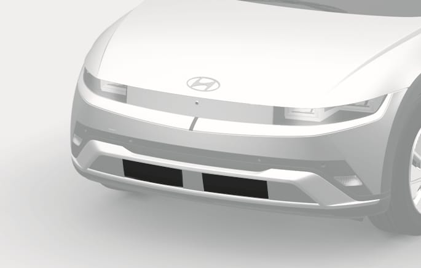
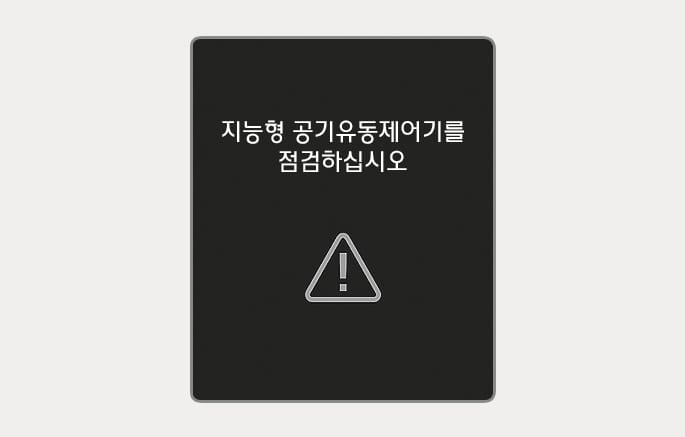

지능형 공기유동 제어기(AAF)

2C_ActiveAirFlap
앞범퍼 하단에 설치된 능동형 에어 플랩(Active Air Flap, AAF)으로 유입되는 공기의 흐름을 제어해 내부 부품을 효율적으로 냉각하고 연비를 향상시킵니다.
-
지능형 공기유동 제어기는 주차 중, 정차 중, 주행 중, 충전 중 등 차량 상태에 관계 없이, 필요 시 언제든 작동할 수 있습니다.
-
지능형 공기유동 제어기에 눈, 비 등의 이물질이 묻거나, 기타 외부 요인으로 인해 에어 플랩이 일시적으로 열리는 경우 기능이 정상적으로 작동하지 않을 수 있습니다.
-
주행 중 클러스터에 지능형 공기유동 제어기를 점검하라는 메시지가 표시되는 경우, 안전한 장소에 정차한 후 시동을 끄고 지능형 공기유동 제어기를 점검하십시오.
-
이물질을 제거하거나 필요한 조치를 취하고, 약 10분 후에 다시 시동을 거십시오.
-
조치 후에도 경고문이 계속 표시되는 경우 당사 직영 하이테크센터나 블루핸즈에서 차량을 점검하십시오.

2C_ActiveAirFlapWarning
-
-
경고문 표시 여부와 관계없이, 공기유동 제어기의 좌우 플랩 중 한 쪽만 열리거나 닫혀 있는 경우, 차량의 시동을 껐다 10분 후 걸고 작동 상태를 다시 확인하십시오.
-
지능형 공기유동 제어기는 모터로 작동됩니다. 장치의 고장을 방지하려면 작동부의 움직임을 방해하거나 과도한 충격을 가하지 마십시오.